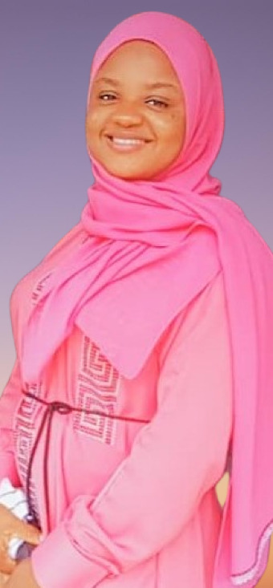

Bello Zainab Olamide
A Frontend development Intern at Zuri, an Electronic and Electrical Engineer and a data analyst. I am currently pursuing my master degree in Communication Engineering and i am passionate about tech in general. I can design responsive websites with HTML and CSS. I am creative and a good team player.

Projects
- Created a simple HTML & CSS-driven website with a few linked pages using replit.
- Created a registration page, a login page and a success page all linked together using replit project link.
- Created a table data of eight(8) column and eleven(11) rows(of which i used colspan and rowspan) with codepen project link.
- Created a tribute page of Chief Samuel Ladoke Akintola with codepen project link.
- created a page about myself and my goals for the I4G & Zuri training with codepen project link.
- Designed and built a mini automatic street light.
- Did a final year project on the design and simulation of a standalone PV renewable system using PVSyst software.
- Co-facilitated a 'clean your environment' project in my town.
- Participated in the 'educate a girl child' program.
Services
-
Hobbies
- Reading educational books
- Having intellectual discussions
- Making research
- Priorities: My religion, family, work and country.
-
Other skills
- Analytical skills
- Leadership and management skills
- Proficient in microsoft office suite